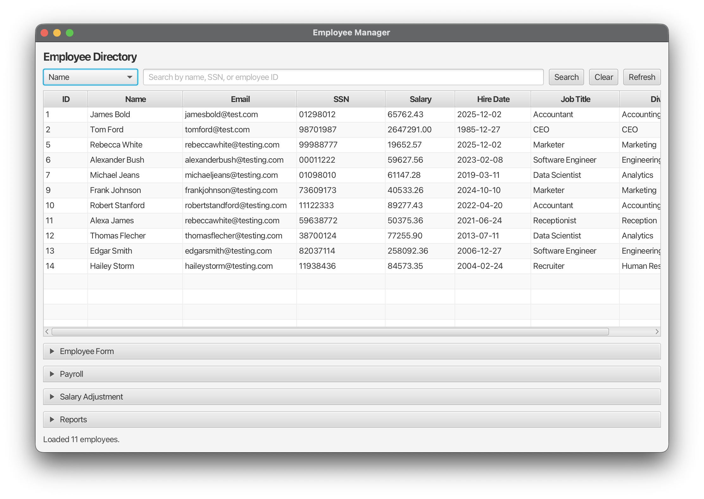
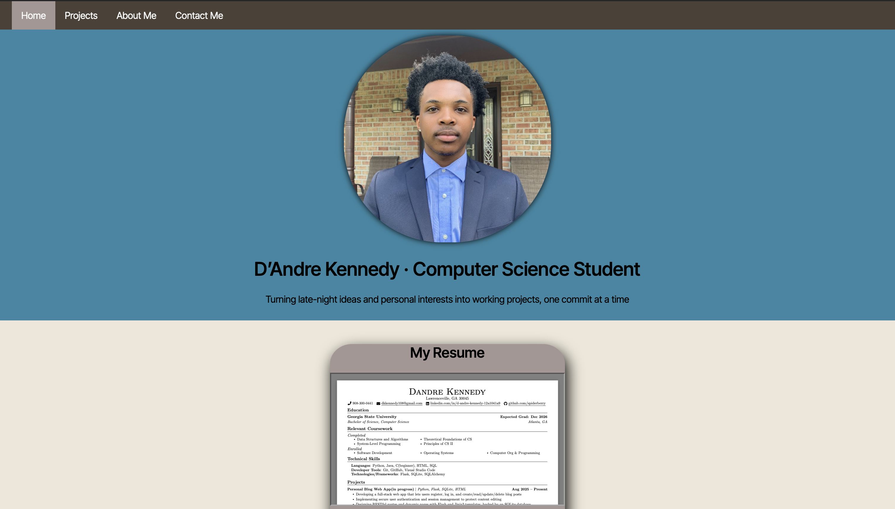

D’Andre Kennedy · Computer Science Student
Turning late-night ideas and personal interests into working projects, one commit at a time
My Resume
View Resume
Featured Projects
Employee Management System

An employee management system application for managing employee records and generating a variety of payroll reports
Personal Portfolio Website

This is my personal portfolio website built using HTML and CSS. It showcases my projects, skills, and contact information.